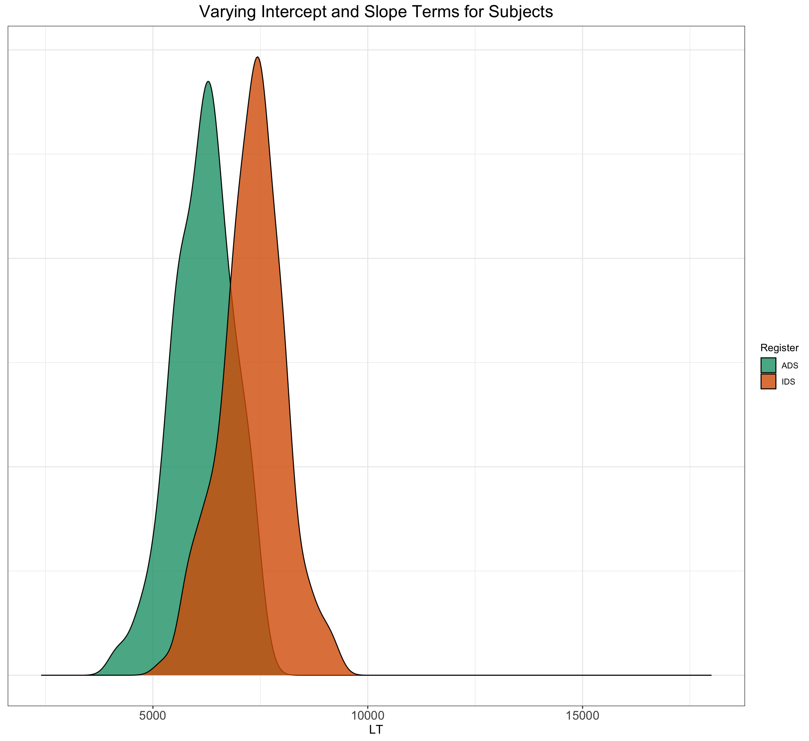

A Description of the Example and Aim of the Simulation
Let’s take inspiration from ManyBabies1 (https://doi.org/10.1177/2515245919900809) and think about how we would simulate data for a new experimmental study on the IDS preference effect. In this study, infant participants are exposed to recordings of adult-directed speech (ADS) and infant-directed speech (IDS), and we use infants’ looking times as the primary dependent variable. The key question is whether there are any behavioural differences according to the set of stimuli within each participant. To gain fammiliarity with the simulation process in an intuitive way, we will simulate data on the scale of looking times (i.e., 0-20,000ms). In later sections, we will extend the process to simulate data on the scale of effect sizes.
To give an overview of this first simulation task, we will simulate data from a design with crossed random factors of subjects and stimuli, fit a model to the simulated data, and then see whether the resulting sample estimates are similar to the population values we specified when simulating the data.
Establishing the data-generating parameters
The first thing to do is to set up the parameters that govern the process we assume to give rise to the data: the data-generating process. Let’s start by defining the number of stimulus items that each infant participant will be exposed to. Because infants are not the most patient of participants, perhaps a realistic study design would allow researchers to expose infants to 8 recordings of IDS and 8 recordings of ADS. Let’s say that a realistic sample size for our laboratory would be around 25 participants. This implies a total of 400 obsevations in this study (i.e., 8 + 8 recording stimuli for each of the 25 children). This is a within-subjects, between-items study; that is, each and every subject receives both IDS and ADS stimuli (within-subject), but each stimulus is either IDS or ADS (between-items).
Now that we have an overview of a dataset that would make sense for our experimental design, let’s start to make some realistic and informed choices for parameters that would make sense to build a statistical model. In the following sections, we will build up the parameters for a mixed-effects statistical model of the following type, as described in the lecture:
According to this formula, the dependent variable for each subject and item is defined as sum of an intercept term 𝛽0, which in this example is the grand mean reaction time for the population of stimuli, plus 𝛽1, the mean RT difference ADS and IDS stimuli, plus random noise. To make 𝛽0 equal the grand mean and 𝛽1 equal the mean IDS minus the mean ADS RT, we will code the SpeechStyle category variable -0.5 for ADS and +0.5 for IDS.
The parameters 𝛽0 and 𝛽1 are fixed effects: they characterize the population of events in which a typical subject encounters a typical stimulus. Thus, we set the mean RT for a “typical†infant participant encountering a “typical†stimulus to 800 ms, and assume that looking times are typically 2000ms longer for IDS as opposed to ADS.
To summarize, we established a reasonable statistical model underlying the data having the form:
The response time for subject 𝑠 on item 𝑖, ğ‘…ğ‘‡ğ‘ 𝑖, is decomposed into a population grand mean 𝛽0, a by-subject random intercept 𝑇0𝑠 , a by-item random intercept 𝑂0𝑖, a fixed slope 𝛽1, a by-subject random slope 𝑇1𝑠 , and a trial-level residual ğ‘’ğ‘ 𝑖. Our data-generating process is fully determined by seven population parameters, all denoted by Greek letters: 𝛽0, 𝛽1, ğœ0, ğœ1, 𝜌, 𝜔0, and ğœ. In the next section we will apply this data-generating process to simulate the sampling of subjects, items, and trials (encounters).
The output of the above function tells us that we now have three sources of variation in the model:
the usual standard deviation of the residuals (i.e., ‘sigma’),
the standard deviation of the population of by-subject varying intercepts (i.e., ‘Intercept’), and
the standard deviation of the population of by-subject varying slopes (i.e., ‘RegisterIDS’).
The latter two sources of variation provide one of the most essential features of multi-level models: partial pooling, as we discussed in the lecture.
According to the formula, response ğ‘…ğ‘‡ğ‘ 𝑖for subject 𝑠 and item 𝑖 is defined as sum of an intercept term 𝛽0, which in this example is the grand mean reaction time for the population of stimuli, plus 𝛽1, the mean RT difference between ingroup and outgroup stimuli, plus random noise ğ‘’ğ‘ 𝑖. To make 𝛽0 equal the grand mean and 𝛽1 equal the mean outgroup minus the mean ingroup RT, we will code the item category variable 𝑋𝑖as -.5 for the ingroup category and +.5 for the outgroup category.
Now that we have an appropriate structure for our simulated dataset, we need to generate the RT values. For this, we need to establish an underlying statistical model. In this and the next section, we will build up a statistical model step by step, defining variables in the code as we go along that reflect our choices for parameters. For convenience, Table @ref(tab:paramdef) lists all of the variables in the statistical model and their associated variable names in the code.
Let us start with a basic model and build up from there. We want a model of RT for subject 𝑠 and item 𝑖that looks something like:
In the model formula, we use Greek letters (𝛽0, 𝛽1) to represent population parameters that are being directly estimated by the model. In contrast, Roman letters represent the remaining variables: observed variables whose values are determined by sampling (e.g., ğ‘…ğ‘‡ğ‘ 𝑖, 𝑇0𝑠 , ğ‘’ğ‘ 𝑖) or fixed by the experiment design (𝑋𝑖).
Although this model is incomplete, we can go ahead and choose parameters for 𝛽0 and 𝛽1. For this example, we set a grand mean of 800 ms and a mean difference of 50 ms. You will need to use disciplinary expertise and/or pilot data to choose these parameters; by the end of this tutorial you will understand how to extract those parameters from an analysis.
Let’s start by loading the required packages:
#if you don't have the pacman package loaded on your computer, uncomment the next line, install pacman, and load in the required packagesoptions(repos ="https://cran.r-project.org/")install.packages('pacman')
The downloaded binary packages are in
/var/folders/58/tggzh74d3qv8vr4k29xsnp28n39xzy/T//RtmpqaBlwZ/downloaded_packages
#load the required packages:pacman::p_load(knitr, # rendering of .Rmd file lme4, # model specification / estimation afex, # anova and deriving p-values from lmer broom.mixed, # extracting data from model fits faux, # generate correlated values tidyverse, # data wrangling and visualisation ggridges, #visualisation viridis, # color schemes for visualisation kableExtra, #helps with knitting the .Rmd file cowplot, #visualisation tool to include multiple plots ggrain, #visualisation tool for raincloud plots dplyr, here )set.seed(1234)opts_chunk$set(tidy.opts=list(width.cutoff=60),tidy=TRUE, fig.width=12, fig.height=11, fig.fullwidth=TRUE)plot_theme <-theme_bw() +theme(plot.title =element_text(hjust =0.5, size =18), legend.position ="none", axis.text.x =element_text(size =13), axis.title.x =element_text(size =13), axis.text.y =element_text(size =12), axis.title.y =element_text(size =13))
Let’s start by setting the fixed-effects parameters; that is, the overall intercept (ADS) and the effect of speech style (IDS). We can be informed about these choices from what we know about looking times in infant expperiments. We could imagine a looking time of around 9 seconds (i.e., 9000ms) for ADS stimuli and for infants to exhibit longer looking times towards IDS stimuli, maybe around 11 seconds (i.e., 11000 ms), or 2000 ms longer looking times than that to ADS. Let’s code this explicitly as parameter values in for our simulation:
# set fixed effect parametersbeta_0 <-9000# intercept; i.e., the grand mean, ADS beta_1 <-2000# slope; i.e, effect of IDS
We also need to add some variability around these values, as we can’t expect each and every infant in the experiment to have exactly the same baseline reaction to the ADS stimuli, and we can’t expect each stimulus to have exactly the same effect. We would expect variability in both subject reactions and item effects. Let’s code this as standard deviation of by-subject random intercept and by-item random intercept sd.
# set random effect parameterstau_0 <-3000# by-subject random intercept sdomega_0 <-1000# by-item random intercept sd
We also can’t expect the effect of IDS stimuli to be the same for every infant; that is, some infants’ attention may be more grabbed by IDS stimuli than others, and we therefore need to add subject-specific variability for the effect of IDS on looking times. Let’s code this as the tau_1 parameter. Here we can also add a crucial component of multi-level models, which is the correlation matrix. There may be patterns in the data between those infants who have a high looking time baseline in ADS and the effects of IDS, and we therefore have to add a correlation matrix to account for these patterns. Here, we specify that there is a weak correlation between the varying intercepts and varying slopes of infant participants. We also need a residual error term to capture unexplained sources of variability:
# set more random effect and error parameterstau_1 <-1000# by-subject random slope sdrho <-0.2# correlation between intercept and slopesigma <-500# residual (error) sd
Define parameters for observations
Now that we have our initial parameters in place, it’s time to start defining parameters related to the number of observations. In this example, we will simulate data from a typical IDS preference experiment, with 24 infants responding to 8
20 subjects responding to 25 ingroup faces and 25 outgroup faces. There are no between-subject factors, so we can set n_subj to 100. We set n_ingroup and n_outgroup to the number of stimulus items in each condition.
# set number of subjects and itemsn_subj <-24# number of subjectsn_ADS <-8# number of ADS stimulin_IDS <-8# number of IDS stimuli
Simulate the sampling of stimulus items
Now it’s time to create a dataset that lists each item, which speech style it is in and its varying properties. Note that the code refers back to the omega_0 parameter that we specified above for the varying item intercept. For the varying item variable, we are going to use the faux package to assign a unique identifer to each of the 16 speech stimuli and designate whether the stimuli are ADS or IDS, with the first 8 being ADS and the next 8 being IDS. We sample the values of 𝑂0𝑖 from a normal distribution using the rnorm() function, with a mean of 0 and SD of 𝜔0.
# simulate a sample of items# total number of items = n_ADS + n_IDSitems <-data.frame(#item_id = seq_len(n_ADS + n_IDS),Register =rep(c("IDS", "ADS"), c(n_ADS, n_IDS)),O_0i =rnorm(n = n_ADS + n_IDS, mean =0, sd = omega_0)) %>%mutate(item_id = faux::make_id(nrow(.), "I")) %>%mutate(SpeechStyle =recode(Register, "ADS"=-0.5, "IDS"=+0.5))#let's have a look at what this has produced:glimpse(items)
Let us introduce a numeric predictor to represent what category each stimulus item 𝑖 appears in (i.e., for the 𝑋𝑖 in our model). Since we predict that looking times to ADS stimuli will be shorter than IDS stimuli, we set ADS to be -0.5 and IDS to be +0.5. This is what is known as contrast coding, and we will later multiply this effect-coded factor by the fixed effect of category to simulate data where the ADS stimuli on average generate looking times of -1000 ms different from the grand mean, while the IDS stimuli are on average 1000 ms different from the grand mean.
In R, most regression procedures can handle two-level factors like category as predictor variables. By default, the procedure will create a new numeric predictor that codes one level of the factor as zero and the other as one. Why not just use the defaults? The short explanation is that the default of 0, 1 coding is not well-suited to the kinds of factorial experimental designs often found in psychology and related fields. For the current example, using the default coding for the 𝑋 predictor would change the interpretation of 𝛽0: instead of the grand mean, it would reflect the mean for the group coded as zero. One could change the default, but we feel it is better to be explicit in the code about what values are being used.
# simulate a sample of subjects# sample from a multivariate random distribution subjects <- faux::rnorm_multi(n = n_subj, mu =0, # means for random effects are always 0sd =c(tau_0, tau_1), # set SDsr = rho, # set correlation, see ?faux::rnorm_multivarnames =c("T_0s", "T_1s")) %>%mutate(subj_id = faux::make_id(nrow(.), "S"))
Simulate trials (encounters)
Since all subjects respond to all items, we can set up a table of trials by making a table with every possible combination of the rows in the subject and item tables using the tidyverse function crossing(). Each trial has random error associated with it, reflecting fluctuations in trial-by-trial performance due to unknown factors; we simulate this by sampling values from a normal distribution with a mean of 0 and SD of sigma.
# cross subject and item IDs; add an error term nrow(.) is# the number of rows in the tableParameterValues <-crossing(subjects, items) %>%mutate(e_si =rnorm(nrow(.), mean =0, sd = sigma)) %>% dplyr::select(subj_id, item_id, Register, SpeechStyle, everything())
Adding it all together
Now we have specified the parameters in ParameterValues, we are ready to add up everything together to create the response variable (i.e., infant looking times in milliseconds). To be more specific, we calculate the response variable, looking time, by adding together:
the grand intercept (beta_0),
each subject-specific random intercept (T_0s),
each item-specific random intercept (O_0i),
each sum of the category effect (beta_1) and the random slope (T_1s), multiplied by the numeric predictor (SpeechStyle), and
each residual error (e_si).
After this we will use dplyr::select() to keep the columns we need. This will create the structure that we set as our goal at the start of this exercise, with the additional column SpeechStyle, which we will keep to use in the estimation process, described in the next section.
`summarise()` has grouped output by 'subj_id'. You can override using the
`.groups` argument.
ggplot(aes(x = Register, y = medLT, fill = Register), data = dat_sim_plot) +geom_rain(alpha =0.8, rain.side ="f1x1", id.long.var ="subj_id",point.args.pos =list(position =position_jitter(width =0.04,height =0, seed =42)), line.args.pos =list(position =position_jitter(width =0.04,height =0, seed =42))) +scale_fill_manual(values =c("#FC4E07","steelblue")) +ggtitle("Looking Time Differences across Speech Styles") +xlab("Speech Style") +ylab("Looking Time (ms)") +scale_color_manual(values =viridis(n =27)) + plot_theme
Warning: Duplicated aesthetics after name standardisation: alpha
Warning: Using the `size` aesthetic with geom_polygon was deprecated in ggplot2 3.4.0.
ℹ Please use the `linewidth` aesthetic instead.
Wonderful, so now we have simulated the dataset with relevant properties that we can use to in sophisticated linear mixed effects models! To make it easier to try out different parameters or to generate many datasets for the purpose of power analysis, we can put all of the code above into a custom function. Set up the function to take all of the parameters we set above as arguments. We’ll set the defaults to the values we used, but you can choose your own defaults. The code below is just all of the code above, condensed a bit. It returns one dataset with the parameters we specified.
# set up the custom data simulation functionSimulateData <-function(n_subj =24, # number of subjectsn_ADS =8, # number of ingroup stimulin_IDS =8, # number of outgroup stimulibeta_0 =9000, # grand meanbeta_1 =3000, # effect of categoryomega_0 =1000, # by-item random intercept sdtau_0 =2000, # by-subject random intercept sdtau_1 =2500, # by-subject random slope sdrho =0.5, # correlation between intercept and slopesigma =200) { # residual (standard deviation) items <-data.frame(#item_id = seq_len(n_ADS + n_IDS),Register =rep(c("IDS", "ADS"), c(n_ADS, n_IDS)),O_0i =rnorm(n = n_ADS + n_IDS, mean =0, sd = omega_0)) %>%mutate(item_id = faux::make_id(nrow(.), "I")) %>%mutate(SpeechStyle =recode(Register, "ADS"=-0.5, "IDS"=+0.5))# simulate a sample of subjects# sample from a multivariate random distribution subjects <- faux::rnorm_multi(n = n_subj, mu =0, # means for random effects are always 0sd =c(tau_0, tau_1), # set SDsr = rho, # set correlation, see ?faux::rnorm_multivarnames =c("T_0s", "T_1s")) %>%mutate(subj_id = faux::make_id(nrow(.), "S")) ParameterValues <-crossing(subjects, items) %>%mutate(e_si =rnorm(nrow(.), mean =0, sd = sigma)) %>% dplyr::select(subj_id, item_id, Register, SpeechStyle, everything()) dat_sim <- ParameterValues %>%mutate(LT = beta_0 + T_0s + O_0i + (beta_1 + T_1s) * SpeechStyle + e_si) %>%mutate(LT = LT +rexp(nrow(.), rate =0.0003)) %>% dplyr::select(subj_id, item_id, Register, SpeechStyle, LT)}
Now we can generate a dataset with the default parameters using my_sim_data() or, for example, a dataset with 500 subjects and no effect of category using my_sim_data(n_subj = 500, beta_1 = 0).
data <-SimulateData(n_subj =500, beta_1 =2000)dat_sim_plot <- data %>%group_by(subj_id, Register) %>% dplyr::summarise(medLT =mean(LT))
`summarise()` has grouped output by 'subj_id'. You can override using the
`.groups` argument.
ggplot(aes(x = Register, y = medLT, fill = Register), data = dat_sim_plot) +geom_rain(alpha =0.8, rain.side ="f1x1", id.long.var ="subj_id",point.args.pos =list(position =position_jitter(width =0.04,height =0, seed =42)), line.args.pos =list(position =position_jitter(width =0.04,height =0, seed =42))) +scale_fill_manual(values =c("#FC4E07","steelblue")) +ggtitle("Looking Time Differences across Speech Styles") +xlab("Speech Style") +ylab("Looking Time (ms)") +scale_color_manual(values =viridis(n =27)) + plot_theme
Warning: Duplicated aesthetics after name standardisation: alpha

Modelling the Simulated Data
Let’s think about how we want to run a generalised linear mixed-effects model of the data. For a varying intercepts, varying slopes model for each subject, we could run the following model with the lmer syntax as follows:
In this model, LT is the response variable; 1 corresponds to the grand intercept (beta_0); SpeechStyle is the predictor for the ADS/IDS manipulation for item i; (1 | item_id) specifies a by-subject random intercept (O_0i); (1 + SpeechStyle | subj_id) specifies a subject-specific random intercept (T_0s) plus the subject-specific random slope of SpeechStyle (T_1s). The error term (e_si) is automatically included in all models, so is left implicit.
The terms in parentheses with the “pipe†separator (|) define the random effects structure. For each of these bracketed terms, the left-hand side of the pipe names the effects you wish to allow to vary and the right hand side names the variable identifying the levels of the random factor over which the terms vary (e.g., subjects or items). The first term, (1 | item_id) allows the intercept (1) to vary over the random factor of items (item_id). This is an instruction to estimate the parameter underlying the O_0i values, namely omega_0. The second term, (1 + X_i | subj_id), allows both the intercept and the effect of category (coded by X_i) to vary over the random factor of subjects (subj_id). It is an instruction to estimate the three parameters that underlie the T_0s and T_1s values, namely tau_0, tau_1, and rho.
Given that looking time data tends to be right-skewed, we can model the data using a logarithmic link function to take this into account. The GLMM would look as follows. We will use the summary() function to view the results.
dataSimulated <-SimulateData()model <-glmer(LT ~1+ SpeechStyle + (1| item_id) + (1+ SpeechStyle | subj_id), data = dataSimulated, family =Gamma(link ="log"))summary(model)
Generalized linear mixed model fit by maximum likelihood (Laplace
Approximation) [glmerMod]
Family: Gamma ( log )
Formula: LT ~ 1 + SpeechStyle + (1 | item_id) + (1 + SpeechStyle | subj_id)
Data: dataSimulated
AIC BIC logLik deviance df.resid
7357.5 7385.2 -3671.8 7343.5 377
Scaled residuals:
Min 1Q Median 3Q Max
-2.6789 -0.6401 -0.1412 0.4258 3.9262
Random effects:
Groups Name Variance Std.Dev. Corr
subj_id (Intercept) 0.009583 0.09789
SpeechStyle 0.039367 0.19841 0.24
item_id (Intercept) 0.007222 0.08498
Residual 0.083845 0.28956
Number of obs: 384, groups: subj_id, 24; item_id, 16
Fixed effects:
Estimate Std. Error t value Pr(>|z|)
(Intercept) 9.38583 0.05888 159.406 <2e-16 ***
SpeechStyle 0.22297 0.11876 1.877 0.0605 .
---
Signif. codes: 0 '***' 0.001 '**' 0.01 '*' 0.05 '.' 0.1 ' ' 1
Correlation of Fixed Effects:
(Intr)
SpeechStyle 0.155
Great, so now we have a way of generating data for our research question, and we have a clear idea of how we want to model the data. Now it’s time to run the actual power analysis. The way we do this is to specify an effect, run a model and count how many of the models show significant effects (i.e., the ground truth).
# simulate, analyze, and return a table of parameter# estimatessingle_run <-function(...) {# ... is a shortcut that forwards any arguments to# my_sim_data(), the function created above dataSimulated <-SimulateData() model <-lmer(LT ~1+ SpeechStyle + (1| item_id) + (1+ SpeechStyle | subj_id), data = dataSimulated)# family = gaussian(link = 'log')) broom.mixed::tidy(model)}single_run()
# A tibble: 7 × 8
effect group term estimate std.error statistic df p.value
<chr> <chr> <chr> <dbl> <dbl> <dbl> <dbl> <dbl>
1 fixed <NA> (Intercept) 1.31e+4 607. 21.6 28.0 5.53e-19
2 fixed <NA> SpeechStyle 4.27e+3 912. 4.68 27.2 7.06e- 5
3 ran_pars subj_id sd__(Intercept) 2.59e+3 NA NA NA NA
4 ran_pars subj_id cor__(Intercep… 5.84e-1 NA NA NA NA
5 ran_pars subj_id sd__SpeechStyle 3.38e+3 NA NA NA NA
6 ran_pars item_id sd__(Intercept) 9.32e+2 NA NA NA NA
7 ran_pars Residual sd__Observation 3.63e+3 NA NA NA NA
Now we have a function to generate data, run our model and spit out the results! Now it’s time to repeat a few hundred times, so that we can calculate how much power we have with our given parameters!
# run simulations and save to a filen_runs <-100# use at least 100 to get stable estimatessims <- purrr::map_df(1:n_runs, ~single_run())
boundary (singular) fit: see help('isSingular')
boundary (singular) fit: see help('isSingular')
boundary (singular) fit: see help('isSingular')
write_csv(sims, "sims.csv")# read saved simulation datasims <-read_csv("sims.csv", col_types =cols(# makes sure plots display in this ordergroup =col_factor(ordered =TRUE),term =col_factor(ordered =TRUE) ))sims %>%filter(effect =="fixed") %>% dplyr::select(term, estimate, p.value)
# calculate mean estimates and power for specified alphaalpha <-0.05sims %>%filter(effect =="fixed") %>%group_by(term) %>% dplyr::summarize(mean_estimate =mean(estimate),mean_se =mean(std.error),power =mean(p.value < alpha),.groups ="drop" )
# A tibble: 2 × 4
term mean_estimate mean_se power
<fct> <dbl> <dbl> <dbl>
1 (Intercept) 12440. 502. 1
2 SpeechStyle 3053. 793. 0.94
After running this model a couple of hundred times, we can converge on values for power that are > .80 - perfect for our little study on the IDS preference effect. However, we should note the limitations in this approach. There are a bunch of assumptions that went into specifying the different parameters, and we need a way to grid search through values to put the power results into perspective. We turn to this problem in the second exercise sheet, but first, let’s make sure that we’ve understood the principles behind data simulation and power analysis.
Exercise 1: Let’s explore the effect of repeated measures on power. Try to run a power analysis with each subject receiving two items and another power analysis with each subject receiving 15 items. What happens to the estimate of statistical power?
Write your answer here:
Exercise 2: We might expect the IDS preference effect to change with infant age, such that older infants listen longer to IDS over ADS than younger infants. How would you add a positive interaction effect of (cross-sectional) age as a predictor to the model (hint: it involves randomly sampling age for each child and adding an effect to the simulation code and model)?